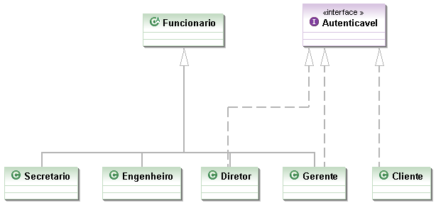

Interface em Java

A interface é um recurso muito utilizado em Java, bem como na maioria das linguagens orientadas a objeto, para “obrigar” a um determinado grupo de classes a ter métodos ou propriedades em comum para existir em um determinado contexto, contudo os métodos podem ser implementados em cada classe de uma maneira diferente. Pode-se dizer, a grosso modo, que uma interface é um contrato que quando assumido por uma classe deve ser implementado.
Dentro das interfaces existem somente assinaturas de métodos e propriedades, cabendo à classe que a utilizará realizar a implementação das assinaturas, dando comportamentos práticos aos métodos.